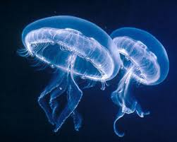

Animales Invertebrados:
Cambiamos totalmente de grupo y entramos en el de todos aquellos animales que no tienen columna vertebral. Los invertebrados no tienen ningún esqueleto interno que permita su articulación. Pese a que pueda resultar extraño, ellos constituyen el 95 % de todas las especies animales que conocemos hoy en día.
Son increíblemente variados en morfología, por lo que una de las pocas características que comparten es que se reproducen mediante huevos.
Artrópodos:
Son el grupo más diverso de invertebrados. De hecho, se estima que el 90 % de los animales de la Tierra forman parte de los artrópodos. Viven en cualquier medio y tienen una estructura de protección que los recubre, patas articuladas y el cuerpo dividido en cabeza, tórax y abdomen.
Los insectos, las arañas, las garrapatas, los escorpiones, los crustáceos (cangrejo, langosta, camarón…), el ciempiés, el milpiés, etc. Todos estos son artrópodos.
Moluscos:
Los moluscos tienen un cuerpo blando que, a menudo, está rodeado de una concha dura. Pueden vivir tanto en la tierra como en el mar y tenemos: caracol, babosa, lapa, ostras, mejillones, almejas, pulpo, calamar...

Equinodermos:
Los equinodermos son animales marinos con un cuerpo dividido en dos lados: una parte superior dura y una inferior blanda donde está la boca. Las estrellas de mar y los erizos son los principales representantes de este grupo.


Gusanos:
Los gusanos tienen un cuerpo blando que no está rodeado de ninguna estructura de protección y cuya principal característica es que se desplazan reptando. Las lombrices, las sanguijuelas e incluso el anisakis o la tenia son algunos de sus representantes.


Esponjas:
También conocidos como poríferos, las esponjas son animales sin capacidad de locomoción, pues viven anclados a la superficie de rocas en el lecho marino. Son los invertebrados más sencillos ya que no tienen sistema nervioso ni cualquier otro tipo de órgano. De todos modos, captan el alimento y el oxígeno a través de sus poros u orificios, donde tienen células diseñadas para ello.


Cnidarios:
Los cnidarios son invertebrados acuáticos muy sencillos sin la capacidad de locomoción activa, aunque algunas especies sí que pueden moverse si son arrastrados por la corriente. Las medusas y los pólipos (viven fijos en las rocas marinas) como las anémonas y el coral son los principales representantes de este grupo.
